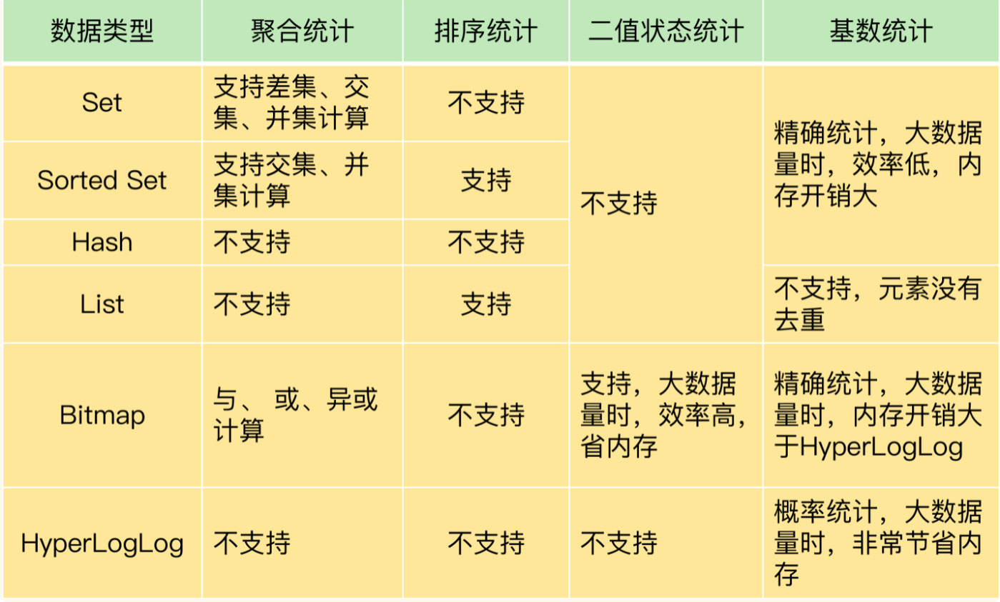
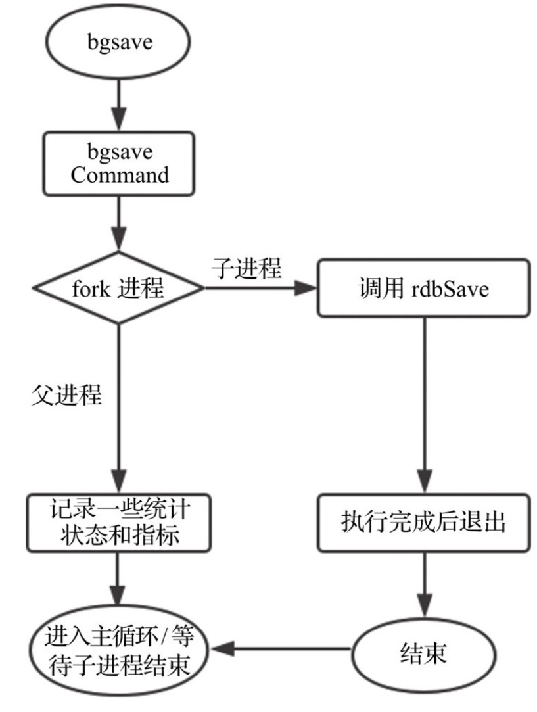

Redis核心原理与实战(1) 介绍
1. Redis
Redis，Remote Dictonary Server，远程字典服务，是一个高性能键值数据库，在后端开发中广泛使用。
Redis 的数据存储在内存中，其网络 IO 处理和数据处理采用一个线程实现，也称 Redis 是单线程的。
严格上来说 Redis 不是单线程的，持久化、异步删除等操作是由额外的线程执行的。由于单个主线程处理网络请求跟不上底层硬件的速度，在 Redis 6.0 后，网络 IO 处理改为多线程，数据访问仍为单线程。
2. 数据类型
2.1 基本类型
Redis 的五大基本数据类型包括：String、List、Set、Hash、Zset。
2.1.1 String
String 即字符串，常见用途是存储序列化后的用户信息
1 | 1. APPEND key str ---> 追加字符串，如果key不存在，则新建 |
2.1.2 List
List 即链表，常用于消息队列
1 | 1. LPUSH/RPUSH key value ---> 往列表key头/尾插入数值 |
2.1.3 Set
Set 即集合，实现集合交并操作
1 | 1. sadd myset value ---> 添加元素 |
2.1.4 Hash
Hash 即字典，类似 java 中的 HashMap
1 | 1. hset myhash key1 value1 ---> 设置元素 |
2.1.5 Zset
Zset 为排序的集合
1 | 1. zadd myset score value ---> 添加元素，优先级为score |
2.2 特殊数据类型
2.2.1 geospatial 地理位置
1 | 常用命令 |
2.2 Hyperloglog
Redis 2.8.9 加入了 hyperloglog，用来进行基数统计，基数为一个数据集中不重复元素的个数。其优点是占用内存固定，但计算存在一定误差。适用场景为允许误差的统计，例如一个网站每天的用户访问量。
1 | 常用命令 |
2.3 Bitmaps
1 | 常用命令 |
各数据类型的特点和对比如下图所示。

3. 持久化
Redis 的数据都是保存在内存的，如果宕机会丢失所有数据，Redis 为了数据恢复，引入了 RDB 和 AOF 两种机制。
3.1 RDB
3.1.1 介绍
RDB 是 Redis 的内存快照，只保存当前时刻的数据，在创建 RDB 文件过程中的数据修改不会记录，不具备数据完整性。
优缺点：
- 优点：适合大规模的数据恢复，对数据的完整性要求不高
- 缺点：需要一定时间进程才能操作，Redis 挂了的话，最后一次修改数据的操作丢失；fork 进程的时候占用较大内存
3.1.2 触发时机
- 用户执行 SAVE、BGSAVE
- 配置的 save 规则满足
- 执行 flushall 命令
- 退出 redis
3.1.3 创建指令
- SAVE：阻塞服务器进程，直到文件创建完毕
- BGSAVE：默认使用，利用 copy on write 创建一个子进程进行持久化，父进程继续处理客户端请求，在此过程中拒绝 SAVE、BGSAVE 操作防止竞争

3.2 AOF
3.2.1 介绍
AOF 以写后日志的形式记录每个写操作，利用 AOF 恢复数据会重新执行这些操作。
写后日志即先执行命令后写数据，为了降低开销，Redis 向 AOF 记录日志并不会进行语法检查，所以先执行命令成功再写入日志。写后日志会丢失最新一次的修改。
3.2.2 写回策略
写回策略决定了 AOF 持久化的时机，包括：
- Always：同步写回，每个写命令执行完立即同步日志到磁盘。基本不丢数据，但影响主线程性能。
- Everysec：每秒写回，将日志写到 AOF 文件的内存缓冲区，每隔一秒同步到磁盘。宕机时丢失 1 秒内的数据，对性能影响折中。
- No：操作系统控制写回，将日志写到缓冲区，由操作习题决定同步磁盘的时机。丢失数据最多，但对性能影响最小。
3.2.3 AOF重写
由于 AOF 文件只能追加，经过长时间运行，AOF 文件过大，继续追加日志以及数据恢复的耗时都会变长，故引入 AOF 重写机制。
重写的思想为将旧日志中的对同一个 key 的多条命令变为一条命令。
AOF 重写流程：
- 创建子进程进行重写操作
- 在重写过程如果服务器收到指令，则将追加到 AOF 缓冲区和 AOF 重写缓冲区
- 子进程完成重写向父进程发送信号，父进程原子替换 AOF 文件
4. 淘汰策略
随着服务的运行，缓存被写满是不可避免的，此时需要对缓存中的数据进行淘汰，Redis 的淘汰策略包含：
- noeviction：默认淘汰策略，可进行删读，不可增改
- volatile-lru：使用 LRU 淘汰设置了过期时间的 key
- volatile-lfu：使用 LFU 淘汰设置了过期时间的 key
- volatile-ttl：淘汰最先要过期的 key
- volatile-random：随机淘汰会过期的 key
- allkeys-lru：使用 LRU 淘汰 key
- allkeys-lfu：使用 LFU 淘汰 key
- allkets-random：随机淘汰key
LRU，Least Recently Used，最近最少使用算法，淘汰最近未被使用过的数据；
LFU，Least Frequently Used，最不经常使用算法，淘汰使用次数最少的数据。